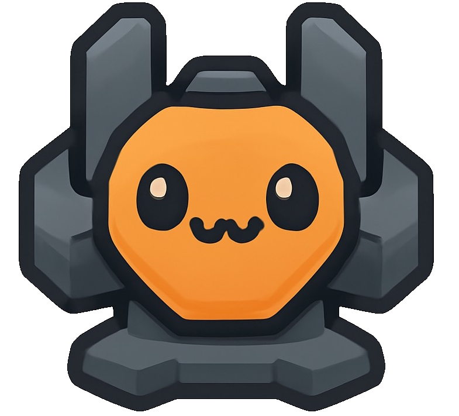

Changelog - Mindustry
Últimas actualizaciones y mejoras
Actualizaciones recientes
Versión 3.2.2 - 20 de Octubre de 2023 - NUEVA MASCOTA!
- 
- Mascota agregada. Nueva campaña para jugar con Tuerqui!
- Corrección de errores menores en la interfaz de usuario.
- Mejora de la estabilidad en el modo multijugador local.
- Ajustes en el balance de las unidades aéreas.
- Optimización en la IA de los enemigos para un mayor desafío.
Versión 3.2.0 - 15 de Octubre de 2023
- Incorporación de nuevas unidades para defensa y ataque.
- Se añadió el modo multijugador local en pantalla dividida.
- Rediseño de la mecánica de recursos con nuevas estrategias.
- Actualización del motor gráfico para soportar resoluciones más altas.
- Mejora de la IA enemiga con tácticas más complejas y variadas.
Versión 3.1.0 - 10 de Octubre de 2022
- Mejoras en el equilibrio de las facciones, aumentando la diversidad estratégica.
- Incorporación de nuevas unidades especializadas en apoyo aéreo y terrestre.
- Revisión de la IA enemiga para mejorar la dificultad en niveles más altos.
- Se añadió un sistema de logros y recompensas dentro del juego.
Versión 3.0.0 - 3 de Junio de 2022
- Reestructuración completa del sistema de recursos y economía.
- Se añadió un modo campaña con historia y desafíos especiales.
- Implementación de nuevos tipos de enemigos con habilidades únicas.
- Soporte para mapas generados aleatoriamente.
Versión 2.5.0 - 28 de Enero de 2022
- Introducción del modo multijugador en línea.
- Se agregó un sistema de misiones diarias y semanales.
- Nuevas armas y sistemas de defensa para cada facción.
- Actualización de la física del juego para mejorar la interacción con el terreno.
Versión 2.3.0 - 15 de Enero de 2022
- Nuevo sistema de clanes y equipos en el modo multijugador.
- Rediseño de la mecánica de recursos con nuevas estrategias de extracción.
- Se añadió el sistema de misiones cooperativas para fomentar el trabajo en equipo.
- Mejoras gráficas para optimizar el juego en sistemas de gama baja.
Versión 2.0.2 - 15 de Agosto de 2021
- Corrección de errores en la interfaz de usuario, especialmente en la pantalla de construcción.
- Mejoras en la estabilidad de la conexión en partidas multijugador en línea.
- Actualización del sistema de tutoriales para mejorar la curva de aprendizaje.
- Pequeñas mejoras gráficas en los mapas y fondos de pantalla.
Versión 2.0.0 - 10 de Julio de 2021
- Incorporación de nuevas facciones y tecnologías avanzadas.
- Mejora en las animaciones de las unidades y edificios.
- Implementación de un sistema de progresión para desbloquear nuevas unidades.
- Rediseño de la interfaz de usuario para mejorar la experiencia de juego.
Versión 1.5.1 - 25 de Septiembre de 2021
- Corrección de bugs menores relacionados con la IA de las unidades aliadas.
- Mejoras en la estabilidad de la conexión en el modo multijugador local.
- Optimización en el rendimiento para dispositivos con menor capacidad gráfica.
- Corrección de problemas con el sistema de misiones diarias.
Versión 1.5.0 - 10 de Septiembre de 2021
- Incorporación de nuevas estructuras de defensa: torretas automáticas y lanzadores de misiles.
- Mejora en el sistema de tutoriales para facilitar la entrada de nuevos jugadores.
- Optimización en la inteligencia artificial para ofrecer más desafíos tácticos.
- Introducción de nuevos tipos de terreno que afectan las estrategias de defensa.
Versión 1.3.0 - 10 de Abril de 2021
- Introducción del sistema de misiones diarias y semanales.
- Optimización de la IA enemiga para ofrecer más desafíos.
- Mejoras en el diseño de los mapas para ofrecer más estrategias.
- Se incorporaron nuevas armas y torretas de largo alcance.
Versión 1.2.0 - 5 de Marzo de 2021
- Mejora en la inteligencia artificial de las unidades enemigas.
- Se agregó la capacidad de construir defensas más avanzadas.
- Optimización en el rendimiento y corrección de errores menores.
- Soporte para más tipos de terreno y mapas más grandes.
Versión 1.1.0 - 1 de Febrero de 2021
- Se introdujeron nuevas unidades de defensa y ataques a larga distancia.
- Mejoras en la inteligencia artificial enemiga.
- Corrección de errores menores en la interfaz de usuario.
- Optimización para dispositivos de gama baja.
Versión 1.0.0 - 1 de Enero de 2021
- Primer lanzamiento oficial del juego.
- Implementación del sistema básico de recursos y unidades de construcción.
- Primeras estructuras de defensa y ataque.
- Soporte para mapas estándar y pequeños.
Futuras Actualizaciones
Fechas aproximadas
Versión 4.0.0 - INDEFINIDA
- Rediseño completo del juego: Nueva interfaz de usuario más moderna, con opciones de personalización más avanzadas y un sistema de menús más accesible.
- Motor gráfico mejorado: Soporte para resoluciones 4K y una mejora general en los efectos visuales y texturas, ofreciendo una experiencia más inmersiva y fluida.
- Nuevas unidades: Incorporación de unidades especializadas, como drones y unidades de apoyo aéreo, ampliando las tácticas posibles en combate.
- Mejoras en la IA enemiga: Los enemigos ahora toman decisiones tácticas más complejas y tienen comportamientos más variados, haciendo que cada enfrentamiento sea único.
- Optimización en rendimiento: Se han realizado ajustes para mejorar el rendimiento en dispositivos de gama baja, y el juego ahora corre de manera más fluida en una mayor variedad de sistemas.
- Nuevo sistema de progresión: Se reestructuran las habilidades y estadísticas de las unidades, permitiendo una mayor personalización y estrategia en la evolución de tus tropas.
- Modo multijugador expandido: Mejoras en la estabilidad del multijugador, ahora con soporte para hasta 8 jugadores en una partida, además de nuevas opciones de juego cooperativo.
- Revisión del sistema de recursos: Los recursos se distribuyen de manera más equilibrada en los mapas, y ahora es posible administrar mejor la producción y recolección de materiales durante las partidas.
- Sistema de clanes: Implementación de un sistema de clanes, permitiendo la creación y gestión de comunidades dentro del juego.
Versión 3.5.0 - 1 de Noviembre de 2023
- Mejoras en la sincronización y estabilidad del modo multijugador, con una experiencia más fluida.
- Actualización del motor gráfico para soportar resoluciones 4K y mayores.
- Incorporación de nuevos mapas y desafíos en el modo campaña, con entornos más dinámicos.
- Actualización de la música de fondo y efectos sonoros, con nuevas pistas adaptadas al juego.
Versión 3.3.0 - 28 de Octubre de 2023
- Rediseño de la mecánica de recursos, con nuevas formas de gestionar y recolectar materiales.
- Mejoras en el sistema de progresión de los personajes, ahora es más flexible y permite más personalización.
- Corrección de errores en la jugabilidad, mejorando la experiencia en los niveles más avanzados.
Crees que podes aportar?
Últimas actualizaciones y mejoras